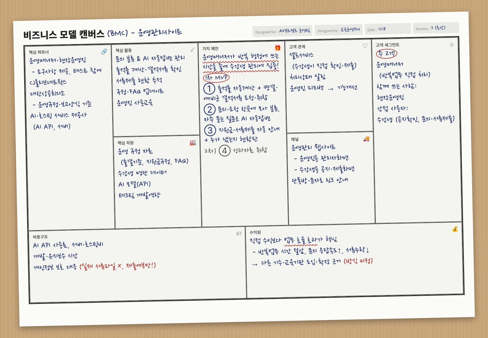
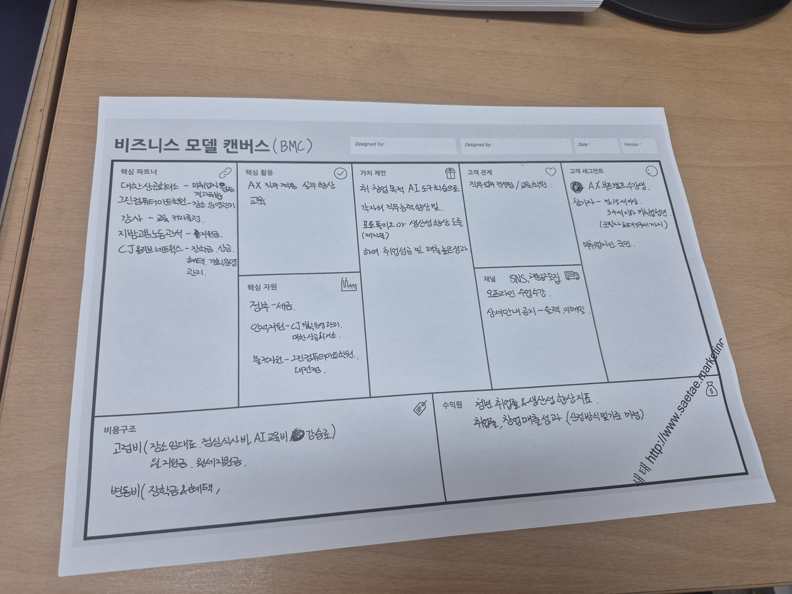

AX 부트캠프 비즈니스모델캔버스(BMC)
교육운영PM이 정리한 BMC 두 장입니다. 하나는 부트캠프 운영 구조, 하나는 이번 팀 프로젝트인 운영관리사이트를 다룹니다.
운영관리사이트 BMC
운영매니저의 반복 행정을 줄이는 운영관리사이트. 1차 MVP는 ① 출결·결석 서류 ② 공지·문의 ③ 행정처리이고, ④ 성과자료 취합은 2차입니다.

이미지를 누르면 원본 크기로 볼 수 있어요.
AX 부트캠프 운영구조 BMC
부트캠프 프로그램 자체의 구조를 정리한 첫 초안입니다. 대한상공회의소, CJ올리브네트웍스, 그린컴퓨터아트학원, 고용노동관서 등 이해관계자와 정부 성과지표 중심의 수익 구조를 담았습니다.

이미지를 누르면 원본 크기로 볼 수 있어요.